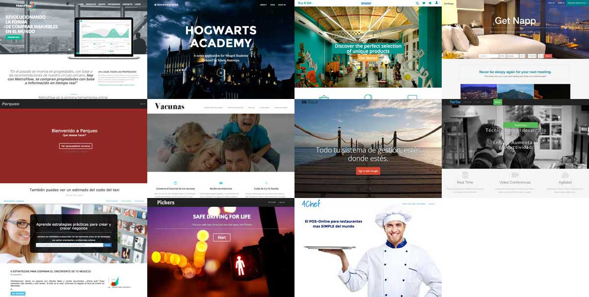
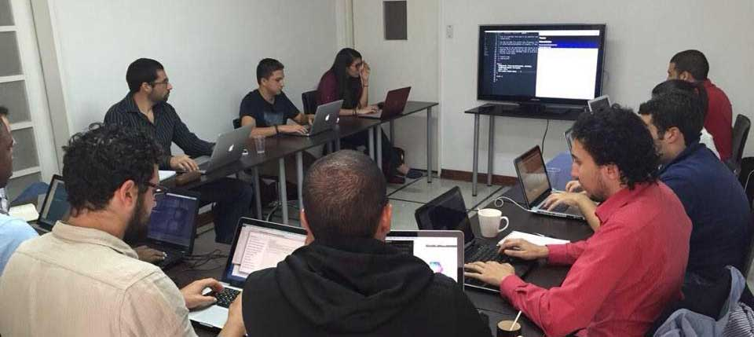
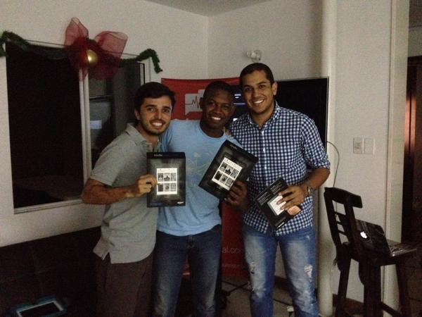
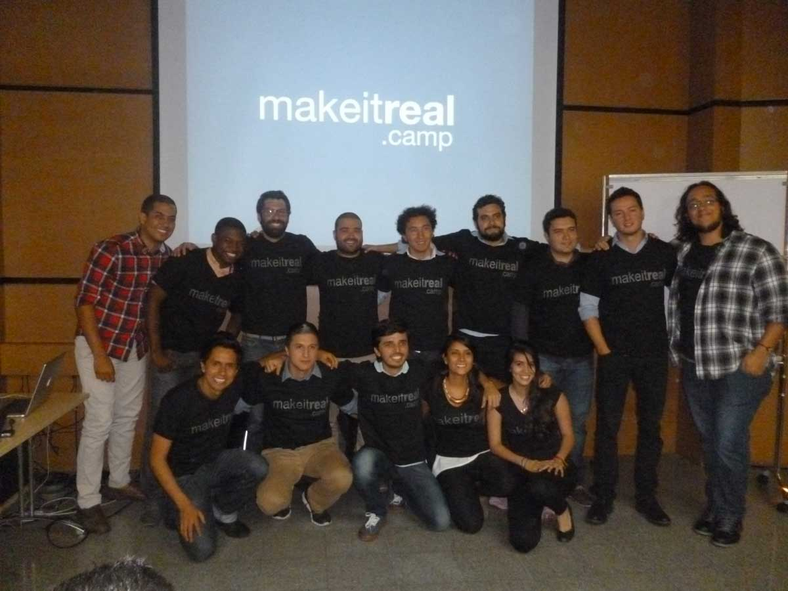

¡Felicitaciones, lo hicieron realidad!

Los landings de los proyectos personales que presentaron en el Demo Day.
Es indescriptible la alegría y el orgullo que sentía mientras presentaban sus proyectos personales el pasado viernes 23 de Enero durante el Demo Day. El tiempo fue corto y no todas las presentaciones salieron perfectas, pero conocía todos los proyectos y el increíble esfuerzo que pusieron para hacerlos realidad. Además de Ruby on Rails, PostgreSQL, HTML5, CSS3, y jQuery, utilizaron tecnologías muy interesantes como Redis, Web Sockets, los API de Google Maps y Google Drive, Web-RTC, S3, HStore, etc. Fue el resultado de 12 semanas de intenso aprendizaje y trabajo.
El 10 de Octubre del 2014 llegué a Atom House faltando 5 minutos para las 9:00 a.m. Ya todos habían llegado y estaban esperando en el corredor principal de la casa. A la mayoría solo los había visto por Skype. Fue muy emocionante conocer a las 11 personas aceptadas para la primera versión del programa.

El primer día hicimos un workshop y creamos una aplicación completa entre todos.
El bootcamp fue intenso. Hubo momentos de frustración. Aprender a programar no es imposible pero requiere mucha dedicación, una gran concentración y una actitud optimista para enfrentar temas que al principio parecen imposibles. Cada reto es diferente y tiene su propia dosis de aprendizaje y frustración. Gran parte del programa es aprender a lidiar con esa sensación.
Pero también hubo incontables momentos de alegría. Cuando se logra superar algún reto de programación, el cerebro libera dopamina, también llamada la “hormona de la felicidad”. Lo más gratificante era escucharlos gritar “¡sí!”, o levantarse con una enorme sonrisa, cuando algo les funcionaba.
El contenido y las charlas diarias les dieron las bases del conocimiento. Los retos los enfrentaron a problemas no guiados similares a los del mundo real. Los talleres reforzaron el contenido y afianzaron el conocimiento. El hackathon les dio la seguridad que necesitaban para enfrentarse a problemas más complejos, y los proyectos pusieron en práctica todos los conocimientos adquiridos, especialmente la capacidad de aprender e implementar nuevas tecnologías.

Andrés, Miguel y Sebastián ganaron el Hackathon con su aplicación MoneApp.
Ahora poseen dos habilidades (superpoderes) que solo una mínima fracción de la sociedad tiene: la capacidad de aprender sobre cualquier tema, y la posibilidad de implementar y hacer realidad sus propias ideas. Son los superpoderes que les van a permitir lograr sus objetivos, ya sea para encontrar un mejor empleo, o para salir a emprender. No los subestimen, y úsenlos para hacer el bien ;)
Han sido un grupo increíble y es muy emocionante ver todo lo que aprendieron y lo que crearon. Sigan aprendiendo, sigan creando. Compartan el conocimiento con otros. Sueñen. Intenten. Iteren. Recuerden que uno fracasa solo cuando lo deja de intentar. Y nunca olviden que el mundo necesita más personas como ustedes y que cada uno puede marcar la diferencia.
!Felicitaciones y mucha suerte en esta etapa de post-bootcamp!
